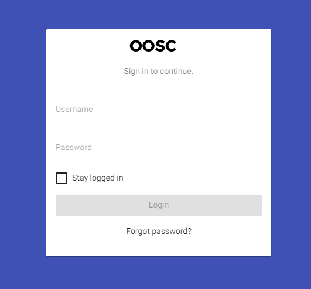

The Digital Attendance web & mobile application is a child attendance tracking tool that helps stakeholders in the education system to monitor the rate of school dropouts.
Teachers are able to digitally take child attendance in class via the mobile application and reports are sent to the different stakeholders in realtime for analysis.
The web application can be accessed online through a web browser via this link or by entering www.attendance.co.ke on your browser address bar.
To log in, a user must have the proper credentials given to them prior by the admin.

The mobile application can be downloaded from the Google Play Store under the name Digital Attendance.
To log in, a user must have the proper credentials given to them prior by the admin.
The home screen is the main screen for the web dashboard. Different stakeholders have different information on the dashbaord. The stakeholders include : implementing partners, administrators and schools.
In order to access information for a specific school, click the “Schools” tab on the sidebar menu. A user can “Add Schools” or “View Schools”.
In order to access information for a specific teacher, click the “Teachers” tab on the sidebar menu. A user can “Add Teachers” or “View Teachers”.
The ‘Children’ tab allows users to add new students and view individual student attendance.
The ‘Import’ tab allows implementing partners/administrators to upload student information off excel sheets.
An administrator can add partners by clicking the “Partners” tab
Users can change their account password and view the profile by clicking on the ‘settings’ tab.
To logout from the system click the “Profile” icon on the top right, and select Sign Out
The application can operate in both offline and online mode.
In online mode, the user has to have mobile data/wifi in order to mark student attendance in class.
Offline mode works in that information collected is stored within the mobile application until an active Internet connection is accessed and once that is established, the information is automatically synced to our cloud servers.
However, a user requires internet connection to log into the system.
After installation of the mobile application, teachers/head-teachers will need to login into the system via a username and password.
The Mark Attendance screen allows the teacher to mark class attendance for students in different classes.
My School allows the headteacher to add, edit or delete students, teachers or classes into the system.
When deleting a student, a headteacher is required to state reason for deleting/removing the student from the school.
The reports tab allows the head-teacher to view an aggregated list of student attendance performance per class, based on gender. Head-teacher's can also view on a daily basis a list of absent students from every class on a certain date.
The daily attendance report is compiled everytime a teacher takes attendance in their class and submits the information by clicking the ‘SUBMIT’ button.
The user profile tab allows the user to change their password, view notifications, claim available rewards, sync off-line attendance with the database, update class registry as well as log out and access the About and Help page.